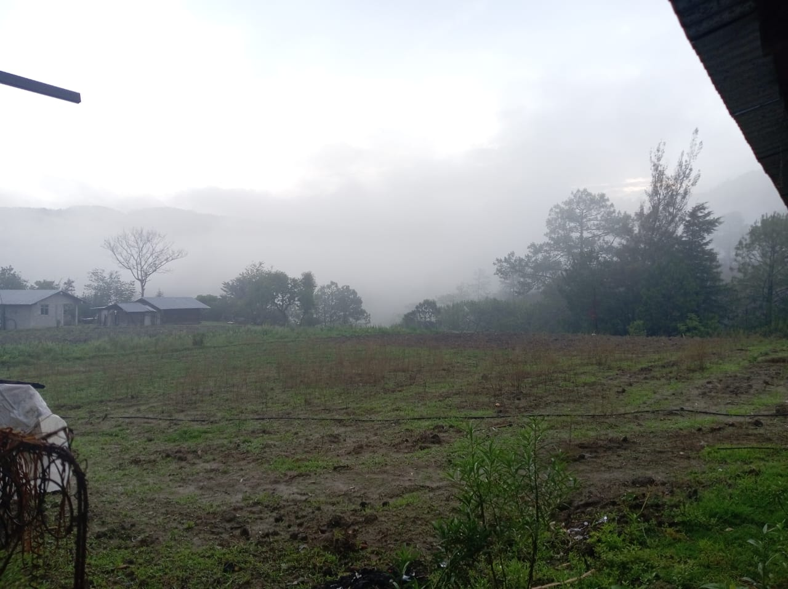
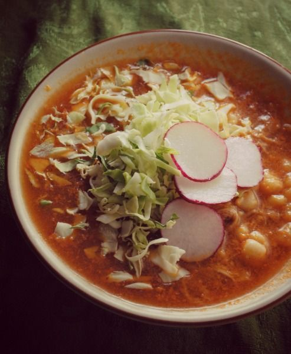
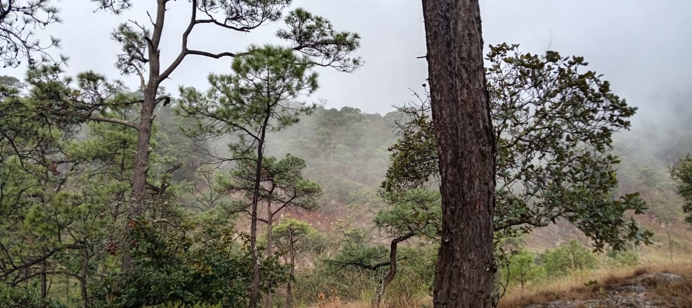

|
|
| PRINCIPAL |     |
EL CLIMA DE SAN PEDRO LLANO GRANDE Este pueblo cuenta con un clima semihúmedo, realmente es maravilloso por que en una parte hace calor y en la otra parte hace un poco de frio y por ello podrá escoger la parte en donde quiera estar al igual hay servicios muy bien atendidos. | LA COMIDA La comida típica es: él mole con los siguientes ingredientes un poco de masa chile guajillo pulla, comino, clavo ajo, sal y el mole pude ser con la carne de res o de pollo por lo regular se consume el de pollo de rancho, pozole y se le echa epazote para dar un sabor exquisito, tamales de pollo o de res, empanadas de pollo ,sopes, también se toma atole de maíz. La bebidas son el pulque, tepache, aguardiente, cerveza, refrescos | LA VESTIMENTA Vestimenta la ropa típica de las mujeres es el huipil, rollo, huaraches, tlaco llares, aretes, rebozo, tenates de palma. Pará los hombres es el calzón de manta, camisa de manta, huaraches sombrero, pañuelo cotón. Y algo muy interesante es que ellas tejen sus huipiles rollos rebosos hacen sus tlaco llares.y por lo general se usan cuando hay una fiesta y lo bailan con su música regional. | LA MUSICA TRADICIONAL La Música tradicional que se escucha es la música con violín acompañada con la guitarra y por lo general se escucha cuando alguien se va a casar o bautizar. |
 |